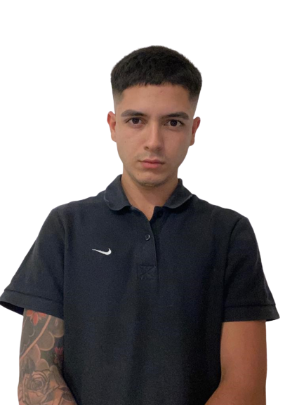

Hola, soy
Iñaki Camino
Desarrollador Web Frontend



Hola, soy
Desarrollador web frontend developer. Estoy constantemente perfeccionando mis skills con HTML5, CSS3, SASS, BOOTSTRAP, JAVASCRIPT y REACT JS. Soy una persona que esta en constante crecimiento, laboral y personalmente, siempre en busca de desafios para seguir desarrollando mi stack tecnologico. Busco siempre hacer desde el disfrute, para poder conectar genuinamente con cualquier proyecto que tenga en mente y asi dar siempre lo mejor.